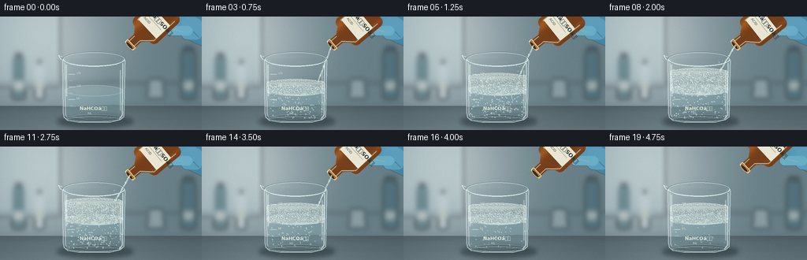
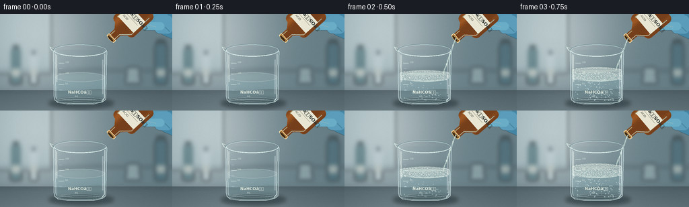
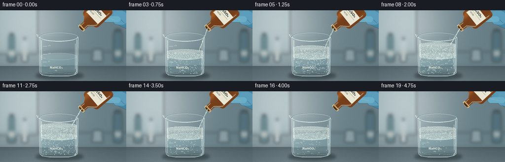
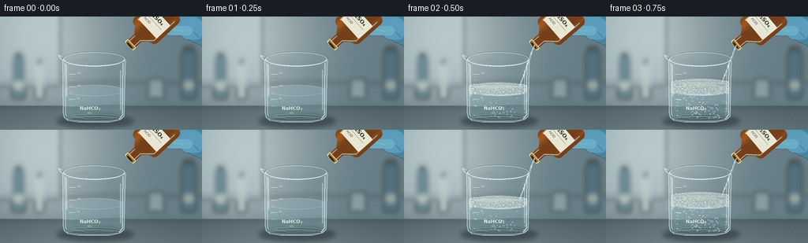

CODING AGENTS AS PIXEL WORLD MODELS
traex/GPT-6.1-Sol · material_0036
点击播放 · 原生 RGB 像素
逐轮保存的候选
回放视频、检查图与代码变化。
每份候选均可单独播放。实际图片检查记录在下方工具轨迹中。
候选 01播放与检查图
点击播放 · 原生 RGB 像素


展开代码变化
--- 上一保存版本
+++ 本次保存版本
@@ -0,0 +1,238 @@
+from pathlib import Path
+import math
+import numpy as np
+from PIL import Image, ImageDraw, ImageFont, ImageFilter
+import artifact_io
+
+ROOT = Path(__file__).resolve().parent
+W,H,S = 256,144,3
+SW,SH=W*S,H*S
+rng=np.random.default_rng(1703)
+font_path='/usr/share/fonts/truetype/dejavu/DejaVuSans.ttf'
+font_bold='/usr/share/fonts/truetype/dejavu/DejaVuSans-Bold.ttf'
+def font(n,bold=False): return ImageFont.truetype(font_bold if bold else font_path,round(n*S))
+def coords(box): return tuple(round(v*S) for v in box)
+def ellipse(d,box,fill,outline=None,width=1): d.ellipse(coords(box),fill=fill,outline=outline,width=max(1,round(width*S)))
+def line(d,pts,fill,width=1): d.line([(round(x*S),round(y*S)) for x,y in pts],fill=fill,width=max(1,round(width*S)))
+def poly(d,pts,fill): d.polygon([(round(x*S),round(y*S)) for x,y in pts],fill=fill)
+def text(d,xy,t,n,fill,bold=False): d.text(coords(xy),t,font=font(n,bold),fill=fill)
+def layer(): return Image.new('RGBA',(SW,SH),(0,0,0,0))
+
+# Softly focused real laboratory, under cool window light.
+y,x=np.mgrid[0:SH,0:SW].astype(float); x/=S; y/=S
+noise=rng.normal(0,.55,(SH,SW))
+wall=np.zeros((SH,SW,3),float)
+light=np.exp(-((x-55)/90)**2-((y-26)/100)**2)
+for c,(base,gain) in enumerate([(102,75),(125,65),(133,60)]): wall[:,:,c]=base+gain*light+noise
+bench=y>113
+for c,base in enumerate([76,93,99]):
+ vals=base+16*(y-113)/31+17*np.exp(-((x-99)/100)**2)+noise*.75
+ wall[:,:,c]=np.where(bench,vals,wall[:,:,c])
+background=Image.fromarray(np.uint8(np.clip(wall,0,255))).convert('RGBA')
+b=layer(); d=ImageDraw.Draw(b)
+# cabinet and broad daylight reflections
+poly(d,[(0,0),(76,0),(76,89),(0,89)],(198,219,222,90))
+line(d,[(72,0),(72,86)],(216,232,235,110),3)
+line(d,[(0,84),(256,84)],(68,88,94,100),2)
+for bx,bw,bh,bc in [(15,17,34,(76,115,123,150)),(44,12,25,(211,225,229,130)),(230,18,40,(60,100,115,120))]:
+ d.rounded_rectangle(coords((bx,85-bh,bx+bw,105)),radius=3*S,fill=bc)
+ d.rectangle(coords((bx+3,79-bh,bx+bw-3,85-bh)),fill=(64,77,82,170))
+ d.rectangle(coords((bx+2,82,bx+bw-2,93)),fill=(218,222,210,120))
+poly(d,[(189,79),(206,79),(209,104),(186,104)],(176,199,201,105))
+line(d,[(0,114),(256,114)],(228,239,238,110),1)
+b=b.filter(ImageFilter.GaussianBlur(3.2*S)); background=Image.alpha_composite(background,b)
+# Shallow reflection and contact shadow below beaker.
+b=layer();d=ImageDraw.Draw(b)
+ellipse(d,(72,125,169,141),(18,33,39,120))
+ellipse(d,(85,129,154,136),(16,28,32,125))
+b=b.filter(ImageFilter.GaussianBlur(3*S));background=Image.alpha_composite(background,b)
+# Fine worktop scratches.
+b=layer();d=ImageDraw.Draw(b)
+for i in range(40):
+ xx=rng.uniform(0,256); yy=rng.uniform(117,144)
+ line(d,[(xx,yy),(xx+rng.uniform(8,40),yy+.25)],(183,198,202,rng.integers(3,14)),.2)
+background=Image.alpha_composite(background,b)
+
+# Persistent bubble seeds: bubbles rise rather than flicker independently.
+bubbles=[(rng.uniform(85,154),rng.random(),rng.uniform(.30,1.35),rng.uniform(.75,1.8),rng.random(),rng.uniform(0,6.28)) for _ in range(195)]
+foam=[(rng.uniform(-1,1),rng.uniform(0,1),rng.uniform(.65,2.35),rng.random(),rng.uniform(0,6.28)) for _ in range(430)]
+
+def bubble(d,bx,by,r,alpha=1,foam=False):
+ # refractive edge, faint shaded interior, displaced highlights
+ if foam:
+ ellipse(d,(bx-r,by-r*.83,bx+r,by+r*.83),(228,240,236,int(170*alpha)),(126,162,163,int(140*alpha)),.28)
+ ellipse(d,(bx-r*.70,by-r*.69,bx+r*.45,by+r*.35),(250,253,241,int(125*alpha)))
+ else:
+ ellipse(d,(bx-r,by-r,bx+r,by+r),(178,212,216,int(22*alpha)),(85,136,151,int(112*alpha)),.26)
+ ellipse(d,(bx-r*.81,by-r*.87,bx+r*.55,by+r*.57),None,(226,246,244,int(145*alpha)),.22)
+ ellipse(d,(bx-r*.55,by-r*.57,bx-r*.03,by-r*.11),(255,255,250,int(218*alpha)))
+ line(d,[(bx+r*.34,by+r*.56),(bx+r*.65,by+r*.24)],(243,254,252,int(150*alpha)),.2)
+
+# Amber glass reagent bottle in its own local coordinates, including visible formula.
+def bottle_image():
+ w,h=53,79
+ Y,X=np.mgrid[0:h*S,0:w*S].astype(float);X/=S;Y/=S
+ v=0.56+0.32*np.exp(-((X-13)/6)**2)+.12*np.exp(-((X-42)/3)**2)
+ pixels=np.zeros((h*S,w*S,4),np.uint8)
+ pixels[:,:,0]=(127*v+46).astype('uint8');pixels[:,:,1]=(76*v+21).astype('uint8');pixels[:,:,2]=(27*v+12).astype('uint8');pixels[:,:,3]=245
+ im=Image.fromarray(pixels,'RGBA'); mask=Image.new('L',im.size,0);dm=ImageDraw.Draw(mask)
+ dm.rounded_rectangle(coords((5,2,48,51)),radius=7*S,fill=255)
+ dm.polygon([coords(p) for p in [(7,44),(46,44),(33,59),(33,72),(20,72),(20,59)]],fill=255)
+ im.putalpha(mask);dd=ImageDraw.Draw(im)
+ line(dd,[(10,8),(10,43)],(252,216,134,125),2.2)
+ line(dd,[(43,10),(43,46),(31,59),(31,69)],(255,224,162,130),1)
+ line(dd,[(22,60),(22,71)],(252,212,132,135),1)
+ dd.rounded_rectangle(coords((10,18,43,42)),radius=S,fill=(233,231,212,255))
+ text(dd,(13,20),'HâSOâ',7,(41,48,47,255),True)
+ line(dd,[(13,30),(39,30)],(104,105,91,255),.3)
+ text(dd,(13,32),'ACID',4.3,(69,73,66,255))
+ dd.rounded_rectangle(coords((19,69,34,74)),radius=S,fill=(153,103,43,255),outline=(248,216,165,255),width=S)
+ ellipse(dd,(20,70.5,33,75),(64,43,24,255),(220,180,106,255),.7)
+ return im
+bottle=bottle_image()
+
+frames=[]
+for f in range(20):
+ t=f/4
+ # Fast reaction onset, vigorous effervescence, then dwindling as acid is withdrawn.
+ on=max(0,min(1,(f-1)/3))
+ activity=on*(1 if f<=11 else math.exp(-(f-11)/5.4))
+ peak=(math.sin(min(1,max(0,(f-1)/13))*math.pi*.78))**.9 if f>1 else 0
+ foam_height=24*peak
+ surface=94-1.7*min(1,max(0,(f-1)/12))
+ top=surface-foam_height
+ im=background.copy()
+ # Blue nitrile glove, soft fingers gripping the acid bottle.
+ hand=layer();hd=ImageDraw.Draw(hand)
+ shift=max(0,f-15)*3.0
+ poly(hd,[(250+shift,-8),(272+shift,-8),(272+shift,44),(244+shift,32),(218+shift,17),(221+shift,0)],(69,133,164,255))
+ for j in range(3):
+ hd.rounded_rectangle(coords((216+shift+j*7,-10+j*6,242+shift+j*7,15+j*7)),radius=7*S,fill=(83+j*4,151+j*3,181+j*3,255))
+ line(hd,[(231+shift+j*7,5+j*7),(238+shift+j*7,12+j*7)],(47,115,147,165),.65)
+ hd.rounded_rectangle(coords((209+shift,12,244+shift,24)),radius=6*S,fill=(106,173,198,255))
+ line(hd,[(215+shift,15),(232+shift,19)],(163,210,221,145),1)
+ hand=hand.filter(ImageFilter.GaussianBlur(.30*S));im=Image.alpha_composite(im,hand)
+ angle=-47 - 5*math.sin(min(f,14)/14*math.pi)
+ rotated=bottle.rotate(angle,resample=Image.Resampling.BICUBIC,expand=True)
+ # Position rotated neck precisely. The transformed local neck midpoint.
+ radians=math.radians(angle)
+ ow,oh=bottle.size; nw,nh=rotated.size
+ lx,ly=26.5*S-ow/2,72*S-oh/2
+ tipx=nw/2+math.cos(radians)*lx+math.sin(radians)*ly
+ tipy=nh/2-math.sin(radians)*lx+math.cos(radians)*ly
+ neckx=165+shift;necky=36-shift*.75
+ pos=(round(neckx*S-tipx),round(necky*S-tipy))
+ im.alpha_composite(rotated,dest=pos)
+ # Refraction through curved beaker walls, retaining the laboratory behind glass.
+ arr=np.asarray(im).copy()
+ yy,xx=np.mgrid[0:SH,0:SW];xxf=xx/S;yyf=yy/S
+ bottom=127+6*np.sqrt(np.clip(1-((xxf-119)/39)**2,0,1))
+ glass=(xxf>80)&(xxf<158)&(yyf>53)&(yyf<bottom)
+ u=(xxf-119)/39
+ source_x=np.clip(np.round((119+39*(u*.91+.09*u**3))*S).astype(int),0,SW-1)
+ source_y=np.clip(yy+np.round(1.2*S*np.sin(u*2.3)).astype(int),0,SH-1)
+ refr=arr[source_y,source_x,:3].astype(float)
+ fresnel=np.abs(u)**9
+ tint=np.stack([np.full_like(u,8),np.full_like(u,19),np.full_like(u,21)],axis=-1)
+ refr=refr*.96+tint*.23+fresnel[:,:,None]*18
+ arr[:,:,:3]=np.where(glass[:,:,None],np.clip(refr,0,255),arr[:,:,:3]).astype(np.uint8)
+ im=Image.fromarray(arr,'RGBA')
+ # Clear bicarbonate solution with a curved bottom and elliptical meniscus.
+ sol=layer();sd=ImageDraw.Draw(sol)
+ poly(sd,[(82,surface),(156,surface),(156,126),(152,130),(140,133),(99,133),(86,129),(82,125)],(159,202,209,65))
+ ellipse(sd,(82,surface-7,156,surface+7),(187,219,219,54),(229,246,241,100),.55)
+ ellipse(sd,(84,124,155,134),(157,196,202,45),(194,228,230,105),.6)
+ # Bright streaks refracted off the bottom and liquid surface.
+ line(sd,[(90,126),(110,130),(143,129)],(231,251,243,115),.7)
+ im=Image.alpha_composite(im,sol)
+ # The continuous thin, transparent pour is visible behind the front rim.
+ if 2<=f<=14:
+ stream=layer();st=ImageDraw.Draw(stream)
+ impactx=146+math.sin(f*.53)*.7
+ pts=[]
+ for z in np.linspace(0,1,35):
+ pts.append((neckx+(impactx-neckx)*z+.25*math.sin(z*18+f*.8),necky+(top-necky)*z))
+ line(st,pts,(125,158,155,150),2)
+ line(st,[(a-.45,b) for a,b in pts],(237,250,239,230),.8)
+ line(st,[(a+.5,b) for a,b in pts],(205,231,219,180),.5)
+ for k in range(4):
+ z=((f*.37+k*.231)%1)
+ ax=neckx+(impactx-neckx)*z;ay=necky+(top-necky)*z
+ ellipse(st,(ax-.8,ay-1.7,ax+.6,ay+1.5),(235,250,241,190))
+ im=Image.alpha_composite(im,stream)
+ # Rising CO2 inside the liquid, dense near the addition point.
+ bl=layer();bd=ImageDraw.Draw(bl)
+ for bx,phase,r,speed,activation,theta in bubbles:
+ if activation>activity: continue
+ p=(phase+t*.28*speed)%1
+ by=129-p*(129-top-1)
+ ax=bx+math.sin(p*8+theta+t)*1.3
+ if by<surface and abs(ax-119)>35:continue
+ bubble(bd,ax,by,r,0.55+.4*activity)
+ im=Image.alpha_composite(im,bl)
+ # Translucent dense foam cap and individual packed bubbles.
+ if foam_height>.2:
+ fo=layer();fd=ImageDraw.Draw(fo)
+ outline=[(82,top+2)]
+ for ax in np.linspace(82,156,80):
+ yn=top-3.3*math.sqrt(max(0,1-((ax-119)/37)**2))
+ yn+=.65*math.sin(ax*1.4+f*.6)+.45*math.sin(ax*.51-f*.7)
+ outline.append((ax,yn))
+ outline += [(156,surface),(147,surface+5),(125,surface+7),(105,surface+6),(87,surface+3),(82,surface)]
+ poly(fd,outline,(219,236,228,185))
+ ellipse(fd,(83,top-5,155,top+7),(230,243,233,145))
+ for u,v,r,act,phase in foam:
+ ax=119+u*36
+ # Perspective includes the gently bowed front of the froth layer.
+ by=top+v*(foam_height+4)+3.5*math.sqrt(max(0,1-u*u))
+ ax+=.4*math.sin(f*.42+phase)
+ by+=.40*math.sin(f*.7+phase)
+ rr=r*(.84+.12*math.sin(f*.3+phase))
+ if by>surface+4:continue
+ bubble(fd,ax,by,rr,.85,True)
+ # Sparkling irregular surface bubbles, some briefly swell and collapse.
+ for j in range(45):
+ ax=84+j*1.59
+ by=top-2.6*math.sqrt(max(0,1-((ax-119)/37)**2))+.50*math.sin(j*5+f*.8)
+ rr=.8+.45*(1+math.sin(j*2.3+f*.5))
+ bubble(fd,ax,by,rr,.94,True)
+ im=Image.alpha_composite(im,fo)
+ # Small splash droplets, only during strongest effervescence.
+ if 4<=f<=13:
+ dr=layer();dd=ImageDraw.Draw(dr)
+ for k in range(7):
+ p=(f*.29+k*.177)%1
+ ax=146+(k-3)*2.0*p
+ by=top-16*math.sin(p*math.pi)+p*3
+ rr=.32+(k%3)*.17
+ bubble(dd,ax,by,rr,.7)
+ im=Image.alpha_composite(im,dr)
+ # Front glass: thin double walls, curved rim, spout and glass highlights.
+ gl=layer();gd=ImageDraw.Draw(gl)
+ line(gd,[(79.5,54),(80,122),(81.3,128),(86,132),(99,134),(140,134),(152,131),(157,127),(158.5,54)],(218,240,239,170),.9)
+ line(gd,[(82,59),(82.6,123),(84,127)],(245,255,249,170),.8)
+ line(gd,[(155.6,59),(155,125),(151,130)],(244,255,250,185),.9)
+ line(gd,[(84,61),(84.4,101)],(248,255,249,110),1.6)
+ line(gd,[(152.5,68),(152.5,119)],(251,255,255,85),1.8)
+ ellipse(gd,(79,44.5,159,63.5),None,(80,116,127,160),1.3)
+ ellipse(gd,(80,45.5,158,62.5),None,(229,249,246,185),.75)
+ # Front half rim carries a strong but fine white glint.
+ pts=[(119+39*math.cos(a),54+9*math.sin(a)) for a in np.linspace(0,math.pi,80)]
+ line(gd,pts,(241,255,250,215),1)
+ line(gd,[(79,51),(74,49),(77,54),(81,56)],(224,244,238,200),.85)
+ ellipse(gd,(85,127,152,133),None,(218,242,238,130),.8)
+ # Printed graduated measuring scale stays fixed on the outside of the vessel.
+ for level,num in [(73,'150'),(89,'100'),(105,'50')]:
+ line(gd,[(87,level),(95,level)],(229,243,235,180),.5)
+ text(gd,(97,level-3.1),num,3.1,(238,248,236,175))
+ line(gd,[(88,level+8),(92,level+8)],(233,246,241,150),.4)
+ text(gd,(101,113),'NaHCOâ',6.0,(239,247,232,230),True)
+ text(gd,(111,120),'aq.',3.7,(231,242,231,180))
+ im=Image.alpha_composite(im,gl)
+ # Tiny, consistent photographic sensor grain; supersampling gives smooth glass.
+ rgb=np.asarray(im.convert('RGB').resize((W,H),Image.Resampling.LANCZOS)).astype(float)
+ grain=np.random.default_rng(481+f).normal(0,.55,(H,W,1))
+ rgb=np.uint8(np.clip(rgb+grain,0,255))
+ frames.append(rgb)
+artifact_io.save(np.stack(frames),ROOT)
+print('Saved',len(frames),'RGB frames at 256x144, 4fps.')
候选 02播放与检查图
点击播放 · 原生 RGB 像素


展开代码变化
--- 上一保存版本
+++ 本次保存版本
@@ -83,7 +83,7 @@
line(dd,[(43,10),(43,46),(31,59),(31,69)],(255,224,162,130),1)
line(dd,[(22,60),(22,71)],(252,212,132,135),1)
dd.rounded_rectangle(coords((10,18,43,42)),radius=S,fill=(233,231,212,255))
- text(dd,(13,20),'HâSOâ',7,(41,48,47,255),True)
+ text(dd,(13,20),'H\u2082SO\u2084',7,(41,48,47,255),True)
line(dd,[(13,30),(39,30)],(104,105,91,255),.3)
text(dd,(13,32),'ACID',4.3,(69,73,66,255))
dd.rounded_rectangle(coords((19,69,34,74)),radius=S,fill=(153,103,43,255),outline=(248,216,165,255),width=S)
@@ -226,7 +226,7 @@
line(gd,[(87,level),(95,level)],(229,243,235,180),.5)
text(gd,(97,level-3.1),num,3.1,(238,248,236,175))
line(gd,[(88,level+8),(92,level+8)],(233,246,241,150),.4)
- text(gd,(101,113),'NaHCOâ',6.0,(239,247,232,230),True)
+ text(gd,(101,113),'NaHCO\u2083',6.0,(239,247,232,230),True)
text(gd,(111,120),'aq.',3.7,(231,242,231,180))
im=Image.alpha_composite(im,gl)
# Tiny, consistent photographic sensor grain; supersampling gives smooth glass.
可观测工具轨迹
实际执行的命令与返回图片。
命令 1exit 0
/bin/bash -lc "ls -la && cat prompt.txt && printf '\\n---RULES---\\n' && cat GENERATION_RULES.md && printf '\\n---SPEC---\\n' && cat task_spec.json"
命令 2exit 0
/bin/bash -lc "cat artifact_io.py && python - <<'PY'
import PIL, numpy
print('PIL and numpy available')
PY"命令 3exit 0
/bin/bash -lc 'fc-list | head -8'
命令 4exit 0
/bin/bash -lc "cat > generate.py <<'PY'
from pathlib import Path
import math
import numpy as np
from PIL import Image, ImageDraw, ImageFont, ImageFilter
import artifact_io
ROOT = Path(__file__).resolve().parent
W,H,S = 256,144,3
SW,SH=W*S,H*S
rng=np.random.default_rng(1703)
font_path='/usr/share/fonts/truetype/dejavu/DejaVuSans.ttf'
font_bold='/usr/share/fonts/truetype/dejavu/DejaVuSans-Bold.ttf'
def font(n,bold=False): return ImageFont.truetype(font_bold if bold else font_path,round(n*S))
def coords(box): return tuple(round(v*S) for v in box)
def ellipse(d,box,fill,outline=None,width=1): d.ellipse(coords(box),fill=fill,outline=outline,width=max(1,round(width*S)))
def line(d,pts,fill,width=1): d.line([(round(x*S),round(y*S)) for x,y in pts],fill=fill,width=max(1,round(width*S)))
def poly(d,pts,fill): d.polygon([(round(x*S),round(y*S)) for x,y in pts],fill=fill)
def text(d,xy,t,n,fill,bold=False): d.text(coords(xy),t,font=font(n,bold),fill=fill)
def layer(): return Image.new('RGBA',(SW,SH),(0,0,0,0))
# Softly focused real laboratory, under cool window light.
y,x=np.mgrid[0:SH,0:SW].astype(float); x/=S; y/=S
noise=rng.normal(0,.55,(SH,SW))
wall=np.zeros((SH,SW,3),float)
light=np.exp(-((x-55)/90)**2-((y-26)/100)**2)
for c,(base,gain) in enumerate([(102,75),(125,65),(133,60)]): wall[:,:,c]=base+gain*light+noise
bench=y>113
for c,base in enumerate([76,93,99]):
vals=base+16*(y-113)/31+17*np.exp(-((x-99)/100)**2)+noise*.75
wall[:,:,c]=np.where(bench,vals,wall[:,:,c])
background=Image.fromarray(np.uint8(np.clip(wall,0,255))).convert('RGBA')
b=layer(); d=ImageDraw.Draw(b)
# cabinet and broad daylight reflections
poly(d,[(0,0),(76,0),(76,89),(0,89)],(198,219,222,90))
line(d,[(72,0),(72,86)],(216,232,235,110),3)
line(d,[(0,84),(256,84)],(68,88,94,100),2)
for bx,bw,bh,bc in [(15,17,34,(76,115,123,150)),(44,12,25,(211,225,229,130)),(230,18,40,(60,100,115,120))]:
d.rounded_rectangle(coords((bx,85-bh,bx+bw,105)),radius=3*S,fill=bc)
d.rectangle(coords((bx+3,79-bh,bx+bw-3,85-bh)),fill=(64,77,82,170))
d.rectangle(coords((bx+2,82,bx+bw-2,93)),fill=(218,222,210,120))
poly(d,[(189,79),(206,79),(209,104),(186,104)],(176,199,201,105))
line(d,[(0,114),(256,114)],(228,239,238,110),1)
b=b.filter(ImageFilter.GaussianBlur(3.2*S)); background=Image.alpha_composite(background,b)
# Shallow reflection and contact shadow below beaker.
b=layer();d=ImageDraw.Draw(b)
ellipse(d,(72,125,169,141),(18,33,39,120))
ellipse(d,(85,129,154,136),(16,28,32,125))
b=b.filter(ImageFilter.GaussianBlur(3*S));background=Image.alpha_composite(background,b)
# Fine worktop scratches.
b=layer();d=ImageDraw.Draw(b)
for i in range(40):
xx=rng.uniform(0,256); yy=rng.uniform(117,144)
line(d,[(xx,yy),(xx+rng.uniform(8,40),yy+.25)],(183,198,202,rng.integers(3,14)),.2)
background=Image.alpha_composite(background,b)
# Persistent bubble seeds: bubbles rise rather than flicker independently.
bubbles=[(rng.uniform(85,154),rng.random(),rng.uniform(.30,1.35),rng.uniform(.75,1.8),rng.random(),rng.uniform(0,6.28)) for _ in range(195)]
foam=[(rng.uniform(-1,1),rng.uniform(0,1),rng.uniform(.65,2.35),rng.random(),rng.uniform(0,6.28)) for _ in range(430)]
def bubble(d,bx,by,r,alpha=1,foam=False):
# refractive edge, faint shaded interior, displaced highlights
if foam:
ellipse(d,(bx-r,by-r*.83,bx+r,by+r*.83),(228,240,236,int(170*alpha)),(126,162,163,int(140*alpha)),.28)
ellipse(d,(bx-r*.70,by-r*.69,bx+r*.45,by+r*.35),(250,253,241,int(125*alpha)))
else:
ellipse(d,(bx-r,by-r,bx+r,by+r),(178,212,216,int(22*alpha)),(85,136,151,int(112*alpha)),.26)
ellipse(d,(bx-r*.81,by-r*.87,bx+r*.55,by+r*.57),None,(226,246,244,int(145*alpha)),.22)
ellipse(d,(bx-r*.55,by-r*.57,bx-r*.03,by-r*.11),(255,255,250,int(218*alpha)))
line(d,[(bx+r*.34,by+r*.56),(bx+r*.65,by+r*.24)],(243,254,252,int(150*alpha)),.2)
# Amber glass reagent bottle in its own local coordinates, including visible formula.
def bottle_image():
w,h=53,79
Y,X=np.mgrid[0:h*S,0:w*S].astype(float);X/=S;Y/=S
v=0.56+0.32*np.exp(-((X-13)/6)**2)+.12*np.exp(-((X-42)/3)**2)
pixels=np.zeros((h*S,w*S,4),np.uint8)
pixels[:,:,0]=(127*v+46).astype('uint8');pixels[:,:,1]=(76*v+21).astype('uint8');pixels[:,:,2]=(27*v+12).astype('uint8');pixels[:,:,3]=245
im=Image.fromarray(pixels,'RGBA'); mask=Image.new('L',im.size,0);dm=ImageDraw.Draw(mask)
dm.rounded_rectangle(coords((5,2,48,51)),radius=7*S,fill=255)
dm.polygon([coords(p) for p in [(7,44),(46,44),(33,59),(33,72),(20,72),(20,59)]],fill=255)
im.putalpha(mask);dd=ImageDraw.Draw(im)
line(dd,[(10,8),(10,43)],(252,216,134,125),2.2)
line(dd,[(43,10),(43,46),(31,59),(31,69)],(255,224,162,130),1)
line(dd,[(22,60),(22,71)],(252,212,132,135),1)
dd.rounded_rectangle(coords((10,18,43,42)),radius=S,fill=(233,231,212,255))
text(dd,(13,20),'HâSOâ',7,(41,48,47,255),True)
line(dd,[(13,30),(39,30)],(104,105,91,255),.3)
text(dd,(13,32),'ACID',4.3,(69,73,66,255))
dd.rounded_rectangle(coords((19,69,34,74)),radius=S,fill=(153,103,43,255),outline=(248,216,165,255),width=S)
ellipse(dd,(20,70.5,33,75),(64,43,24,255),(220,180,106,255),.7)
return im
bottle=bottle_image()
frames=[]
for f in range(20):
t=f/4
# Fast reaction onset, vigorous effervescence, then dwindling as acid is withdrawn.
on=max(0,min(1,(f-1)/3))
activity=on*(1 if f<=11 else math.exp(-(f-11)/5.4))
peak=(math.sin(min(1,max(0,(f-1)/13))*math.pi*.78))**.9 if f>1 else 0
foam_height=24*peak
surface=94-1.7*min(1,max(0,(f-1)/12))
top=surface-foam_height
im=background.copy()
# Blue nitrile glove, soft fingers gripping the acid bottle.
hand=layer();hd=ImageDraw.Draw(hand)
shift=max(0,f-15)*3.0
poly(hd,[(250+shift,-8),(272+shift,-8),(272+shift,44),(244+shift,32),(218+shift,17),(221+shift,0)],(69,133,164,255))
for j in range(3):
hd.rounded_rectangle(coords((216+shift+j*7,-10+j*6,242+shift+j*7,15+j*7)),radius=7*S,fill=(83+j*4,151+j*3,181+j*3,255))
line(hd,[(231+shift+j*7,5+j*7),(238+shift+j*7,12+j*7)],(47,115,147,165),.65)
hd.rounded_rectangle(coords((209+shift,12,244+shift,24)),radius=6*S,fill=(106,173,198,255))
line(hd,[(215+shift,15),(232+shift,19)],(163,210,221,145),1)
hand=hand.filter(ImageFilter.GaussianBlur(.30*S));im=Image.alpha_composite(im,hand)
angle=-47 - 5*math.sin(min(f,14)/14*math.pi)
rotated=bottle.rotate(angle,resample=Image.Resampling.BICUBIC,expand=True)
# Position rotated neck precisely. The transformed local neck midpoint.
radians=math.radians(angle)
ow,oh=bottle.size; nw,nh=rotated.size
lx,ly=26.5*S-ow/2,72*S-oh/2
tipx=nw/2+math.cos(radians)*lx+math.sin(radians)*ly
tipy=nh/2-math.sin(radians)*lx+math.cos(radians)*ly
neckx=165+shift;necky=36-shift*.75
pos=(round(neckx*S-tipx),round(necky*S-tipy))
im.alpha_composite(rotated,dest=pos)
# Refraction through curved beaker walls, retaining the laboratory behind glass.
arr=np.asarray(im).copy()
yy,xx=np.mgrid[0:SH,0:SW];xxf=xx/S;yyf=yy/S
bottom=127+6*np.sqrt(np.clip(1-((xxf-119)/39)**2,0,1))
glass=(xxf>80)&(xxf<158)&(yyf>53)&(yyf<bottom)
u=(xxf-119)/39
source_x=np.clip(np.round((119+39*(u*.91+.09*u**3))*S).astype(int),0,SW-1)
source_y=np.clip(yy+np.round(1.2*S*np.sin(u*2.3)).astype(int),0,SH-1)
refr=arr[source_y,source_x,:3].astype(float)
fresnel=np.abs(u)**9
tint=np.stack([np.full_like(u,8),np.full_like(u,19),np.full_like(u,21)],axis=-1)
refr=refr*.96+tint*.23+fresnel[:,:,None]*18
arr[:,:,:3]=np.where(glass[:,:,None],np.clip(refr,0,255),arr[:,:,:3]).astype(np.uint8)
im=Image.fromarray(arr,'RGBA')
# Clear bicarbonate solution with a curved bottom and elliptical meniscus.
sol=layer();sd=ImageDraw.Draw(sol)
poly(sd,[(82,surface),(156,surface),(156,126),(152,130),(140,133),(99,133),(86,129),(82,125)],(159,202,209,65))
ellipse(sd,(82,surface-7,156,surface+7),(187,219,219,54),(229,246,241,100),.55)
ellipse(sd,(84,124,155,134),(157,196,202,45),(194,228,230,105),.6)
# Bright streaks refracted off the bottom and liquid surface.
line(sd,[(90,126),(110,130),(143,129)],(231,251,243,115),.7)
im=Image.alpha_composite(im,sol)
# The continuous thin, transparent pour is visible behind the front rim.
if 2<=f<=14:
stream=layer();st=ImageDraw.Draw(stream)
impactx=146+math.sin(f*.53)*.7
pts=[]
for z in np.linspace(0,1,35):
pts.append((neckx+(impactx-neckx)*z+.25*math.sin(z*18+f*.8),necky+(top-necky)*z))
line(st,pts,(125,158,155,150),2)
line(st,[(a-.45,b) for a,b in pts],(237,250,239,230),.8)
line(st,[(a+.5,b) for a,b in pts],(205,231,219,180),.5)
for k in range(4):
z=((f*.37+k*.231)%1)
ax=neckx+(impactx-neckx)*z;ay=necky+(top-necky)*z
ellipse(st,(ax-.8,ay-1.7,ax+.6,ay+1.5),(235,250,241,190))
im=Image.alpha_composite(im,stream)
# Rising CO2 inside the liquid, dense near the addition point.
bl=layer();bd=ImageDraw.Draw(bl)
for bx,phase,r,speed,activation,theta in bubbles:
if activation>activity: continue
p=(phase+t*.28*speed)%1
by=129-p*(129-top-1)
ax=bx+math.sin(p*8+theta+t)*1.3
if by<surface and abs(ax-119)>35:continue
bubble(bd,ax,by,r,0.55+.4*activity)
im=Image.alpha_composite(im,bl)
# Translucent dense foam cap and individual packed bubbles.
if foam_height>.2:
fo=layer();fd=ImageDraw.Draw(fo)
outline=[(82,top+2)]
for ax in np.linspace(82,156,80):
yn=top-3.3*math.sqrt(max(0,1-((ax-119)/37)**2))
yn+=.65*math.sin(ax*1.4+f*.6)+.45*math.sin(ax*.51-f*.7)
outline.append((ax,yn))
outline += [(156,surface),(147,surface+5),(125,surface+7),(105,surface+6),(87,surface+3),(82,surface)]
poly(fd,outline,(219,236,228,185))
ellipse(fd,(83,top-5,155,top+7),(230,243,233,145))
for u,v,r,act,phase in foam:
ax=119+u*36
# Perspective includes the gently bowed front of the froth layer.
by=top+v*(foam_height+4)+3.5*math.sqrt(max(0,1-u*u))
ax+=.4*math.sin(f*.42+phase)
by+=.40*math.sin(f*.7+phase)
rr=r*(.84+.12*math.sin(f*.3+phase))
if by>surface+4:continue
bubble(fd,ax,by,rr,.85,True)
# Sparkling irregular surface bubbles, some briefly swell and collapse.
for j in range(45):
ax=84+j*1.59
by=top-2.6*math.sqrt(max(0,1-((ax-119)/37)**2))+.50*math.sin(j*5+f*.8)
rr=.8+.45*(1+math.sin(j*2.3+f*.5))
bubble(fd,ax,by,rr,.94,True)
im=Image.alpha_composite(im,fo)
# Small splash droplets, only during strongest effervescence.
if 4<=f<=13:
dr=layer();dd=ImageDraw.Draw(dr)
for k in range(7):
p=(f*.29+k*.177)%1
ax=146+(k-3)*2.0*p
by=top-16*math.sin(p*math.pi)+p*3
rr=.32+(k%3)*.17
bubble(dd,ax,by,rr,.7)
im=Image.alpha_composite(im,dr)
# Front glass: thin double walls, curved rim, spout and glass highlights.
gl=layer();gd=ImageDraw.Draw(gl)
line(gd,[(79.5,54),(80,122),(81.3,128),(86,132),(99,134),(140,134),(152,131),(157,127),(158.5,54)],(218,240,239,170),.9)
line(gd,[(82,59),(82.6,123),(84,127)],(245,255,249,170),.8)
line(gd,[(155.6,59),(155,125),(151,130)],(244,255,250,185),.9)
line(gd,[(84,61),(84.4,101)],(248,255,249,110),1.6)
line(gd,[(152.5,68),(152.5,119)],(251,255,255,85),1.8)
ellipse(gd,(79,44.5,159,63.5),None,(80,116,127,160),1.3)
ellipse(gd,(80,45.5,158,62.5),None,(229,249,246,185),.75)
# Front half rim carries a strong but fine white glint.
pts=[(119+39*math.cos(a),54+9*math.sin(a)) for a in np.linspace(0,math.pi,80)]
line(gd,pts,(241,255,250,215),1)
line(gd,[(79,51),(74,49),(77,54),(81,56)],(224,244,238,200),.85)
ellipse(gd,(85,127,152,133),None,(218,242,238,130),.8)
# Printed graduated measuring scale stays fixed on the outside of the vessel.
for level,num in [(73,'150'),(89,'100'),(105,'50')]:
line(gd,[(87,level),(95,level)],(229,243,235,180),.5)
text(gd,(97,level-3.1),num,3.1,(238,248,236,175))
line(gd,[(88,level+8),(92,level+8)],(233,246,241,150),.4)
text(gd,(101,113),'NaHCOâ',6.0,(239,247,232,230),True)
text(gd,(111,120),'aq.',3.7,(231,242,231,180))
im=Image.alpha_composite(im,gl)
# Tiny, consistent photographic sensor grain; supersampling gives smooth glass.
rgb=np.asarray(im.convert('RGB').resize((W,H),Image.Resampling.LANCZOS)).astype(float)
grain=np.random.default_rng(481+f).normal(0,.55,(H,W,1))
rgb=np.uint8(np.clip(rgb+grain,0,255))
frames.append(rgb)
artifact_io.save(np.stack(frames),ROOT)
print('Saved',len(frames),'RGB frames at 256x144, 4fps.')
PY
python generate.py"命令 5exit 0
/bin/bash -lc "python - <<'PY'
p='generate.py'
s=open(p).read().replace('HâÂÂSOâÂÂ',r'H\\u2082SO\\u2084').replace('NaHCOâÂÂ',r'NaHCO\\u2083')
open(p,'w').write(s)
PY
python generate.py
python - <<'PY'
from pathlib import Path
import numpy as np
from PIL import Image
p=np.load('pixels.npz')['pixels']
assert p.shape==(144,256,20)
f=list(Path('frames').glob('*.png'))
assert len(f)==20
assert all(Image.open(x).size==(256,144) and Image.open(x).mode=='RGB' for x in f)
assert all(Path(x).is_file() for x in ['generate.py','index.html','pixels.npz','inspection.png','transition_check.png'])
print('Verified required artifacts and all 20 RGB frames.')
PY"命令 6exit 0
/bin/bash -lc "grep -n 'SO\\|NaH' generate.py"
命令 7exit 0
/bin/bash -lc "python - <<'PY'
p='generate.py'
s=open(p).read().splitlines()
for i,l in enumerate(s):
if 'text(dd,(13,20)' in l: s[i]=\" text(dd,(13,20),'H\\\\u2082SO\\\\u2084',7,(41,48,47,255),True)\"
if 'text(gd,(101,113)' in l:s[i]=\" text(gd,(101,113),'NaHCO\\\\u2083',6.0,(239,247,232,230),True)\"
open(p,'w').write('\\n'.join(s)+'\\n')
PY
python generate.py"保存候选 2 份；完成命令 7 次；可验证图片返回 0 张。原始 API 响应与完整日志保留在本地。